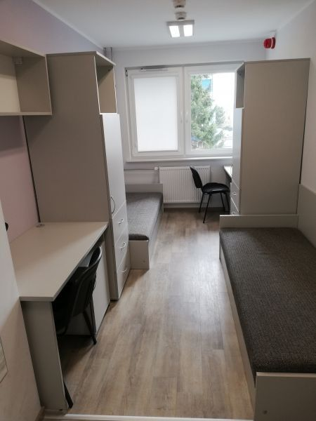

Internat szkolny
Internat zapewnia uczniom bezpieczne i przyjazne warunki do nauki oraz wypoczynku. Dostępne są pokoje 2–4-osobowe, internet oraz zaplecze sanitarne.
Na terenie internatu znajdują się:
- świetlica,
- sala do cichej nauki,
- kuchnia z aneksem,
- strefa rekreacyjna.
Internat jest czynny od niedzielnego wieczoru do piątkowego popołudnia. Regulamin i szczegóły dostępne są w sekretariacie i u wychowawców.

Biblioteka szkolna
Biblioteka szkolna to miejsce wypożyczania książek, nauki i spokojnej pracy. Uczniowie mogą przygotowywać się do zajęć oraz rozwijać zainteresowania.
Księgozbiór obejmuje:
- lektury szkolne,
- literaturę fachową (rolnictwo, weterynaria, agrobiznes, żywienie),
- podręczniki i opracowania,
- literaturę piękną i popularnonaukową.
Dostępne są stanowiska komputerowe z internetem oraz możliwość skorzystania z drukarki i ksera.

RODO – Ochrona danych osobowych
Zespół Szkół Centrum Kształcenia Rolniczego im. Szczepana Pieniążka w Swornegaciach przetwarza dane osobowe zgodnie z Rozporządzeniem Parlamentu Europejskiego i Rady (UE) 2016/679 (RODO).
Administrator danych
Zespół Szkół Centrum Kształcenia Rolniczego im. Szczepana Pieniążka w Swornegaciach
ul. Szkolna 1, 89-608 Swornegacie
tel. 52 000 00 00
e-mail: sekretariat@zsckrswornegacie.pl
Inspektor Ochrony Danych
Kontakt w sprawach RODO: iod@zsckrswornegacie.pl
Cele przetwarzania danych
- realizacja zadań oświatowych,
- prowadzenie dokumentacji przebiegu nauczania,
- organizacja zajęć dydaktycznych i opiekuńczych,
- zapewnienie bezpieczeństwa na terenie szkoły i internatu,
- kontakt z rodzicami/opiekunami.
Prawa osób
- prawo dostępu do danych,
- prawo do sprostowania,
- prawo do ograniczenia przetwarzania (w określonych przypadkach),
- prawo wniesienia sprzeciwu (w określonych przypadkach),
- prawo wniesienia skargi do PUODO.